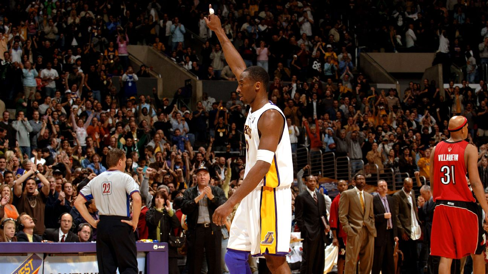

Kobe Bryant
The Black Mamba

On January 22, 2006, Bryant scored a career-high 81 points in a 122–104 victory against the Toronto Raptors.
Here's a time line of Kobe Bryant's life:
- 1978 - Born in Philadelphia, Pennsylvania
- 1992-1996 - Attended Lower Merion High School
- 1996 - Drafted at #13 by the Charlotte Hornets, traded to the Los Angeles Lakers
- 1997 - Won the Slam Dunk Contest, the youngest ever at the age of 18
- 1999-2002 - Won 3 consecutive championships alongside with Shaquille O'Neal, forming one of the greatest player duos
- 2006 - Scored 81 points, the second-highest point total in NBA history
- 2008 - Won his first olympic gold medal with Team USA in Beijing
- 2009-2010 - Won 2 consecutive championships and NBA Finals MVP awards
- 2012 - Won his second olympic gold medal with Team USA in London
- 2016 - Scored 60 points in his last game, the oldest player at 37 to accomplish this
- 2018 - Won an Oscar for his short film "Dear Basketball"
- 2020 - Died in a helicopter crash in Calabasas, California
“I saw things differently. I didn’t want to do what others had done. That didn’t drive me, didn’t get me in the gym before others got up. I wanted to do one better. Actually, I wanted to do a lot better. There were players I looked up to until I looked them square in the eyes. I know that one day, when I left the game, I didn’t actually want to leave. I wanted to leave my mark.”
– Kobe Bryant